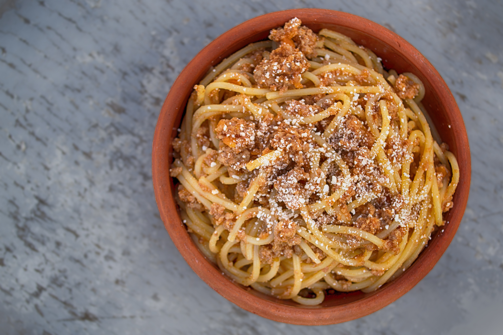

Ao ingerir o carboidrato, ele vai ser quebrado e absorvido, entrando na corrente sanguínea. Lá, ele vai precisar da ajuda da insulina para entrar nas células (que é onde ele deve estar para produzir energia). Até aí, tudo perfeito, né? O que acontece é que quando ingerimos mais carboidratos do que o corpo precisaria para produzir energia para as nossas funções do dia-a-dia, ele vai ser estocado no nosso fígado e nos músculos na forma de glicogênio, que é basicamente uma reserva de energia. Quando o nosso consumo ultrapassa a capacidade desses estoques, ele vai ser acumulado em forma de GORDURA, através do estímulo da insulina (que é um hormônio que tende a “guardar” e ainda impede que as gorduras sejam acessadas pra serem usadas como fonte de energia - o que consequentemente dificulta nossa perda de gordura). Por isso, para quem quer emagrecer, além do balanço energético negativo (comer menos calorias do que gasta), pode ser interessante reduzir o percentual de carboidratos (dieta low carb) para manter um ambiente baixo em insulina, ensinando ao corpo que, na falta dos carboidratos, ele pode tirar energia das gorduras.
Nutrição e reeducação alimentar